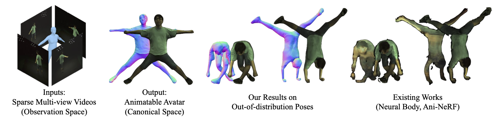
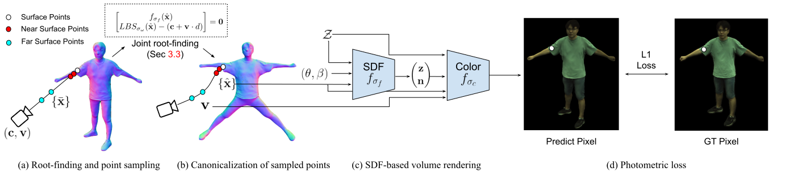
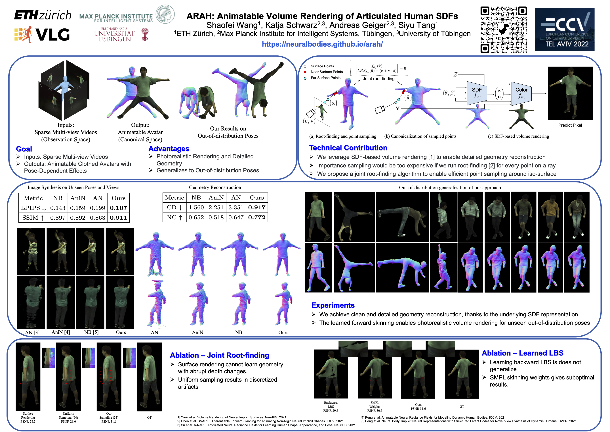

Given sparse multi-view videos, ARAH learns animatable clothed human avatars that have detailed pose-dependent geometry/appearance and generalize to out-of-distribution poses.
ARAH combines articulated human SDFs with a novel joint root-finding algorithm to solve the problem of simultaneously searching ray-surface intersections and their correspondences in canonical space for rendering. This enables efficient and accurate sampling for volume rendering of clothed human avatars, which have both detailed pose-dependent geometry and appearance, while generalizing well to out-of-distribution test poses.

Our model consists of a forward linear blend skinning (LBS) network, a canonical SDF network, and a canonical color network. When rendering a specific pixel of the image in observation space, we first find the intersection of the corresponding camera ray and the observation-space SDF iso-surface. Since we model a canonical SDF and a forward LBS, we propose a novel joint root-finding algorithm that can simultaneously search for the ray-surface intersection and the canonical correspondence of the intersection point (Section 3.3 of the paper). Such a formulation does not condition the networks on observations in observation space. Consequently, it can generalize to unseen poses. Once the ray-surface intersection is found, we sample near/far surface points on the camera ray and find their canonical correspondences via forward LBS root-finding. The canonicalized points are used for volume rendering to compose the final RGB value at the pixel. The model is trained end-to-end using the photometric loss and regularization losses.

Comparison to baselines, trained with 4-views, 300 frames
Out-of-distribution generalization for models trained from a single view with 500 frames

@InProceedings{ARAH:ECCV:2022,
title = {ARAH: Animatable Volume Rendering of Articulated Human SDFs},
author = {Shaofei Wang and Katja Schwarz and Andreas Geiger and Siyu Tang},
booktitle = {European Conference on Computer Vision},
year = {2022}
}